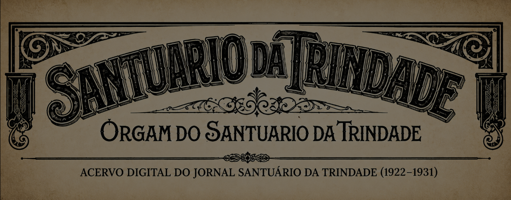

◇
Jornal Santuário da Trindade
◇
Coleção completa disponível
1922–1931
O Jornal Santuário da Trindade integra a primeira coleção completa do Vox Ecclesiae. Os exemplares estão organizados por ano e edição, com PDFs, imagens originais e pesquisa no texto reconhecido por OCR.
◇
Anos disponíveis
◇Pesquisa acadêmica: confira sempre a página original antes de transcrever ou citar. O OCR é um instrumento de localização e pode conter erros.